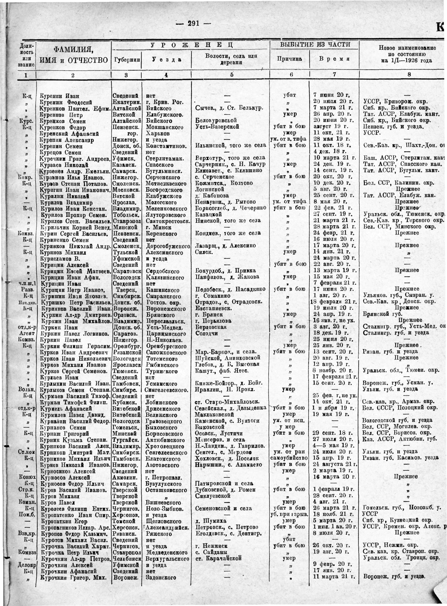

Your browser does not have support for Canvas.
Plot runtime...
Histogram for: RGB Red Green Blue Hue Saturation Value (brightness) CMYK Cyan Magenta Yellow Kelvin (Black)
Count every pixels
Plot style: Continuous Discreet
Plot fill
Plot colors: None Flat colors Gradients